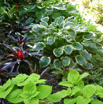
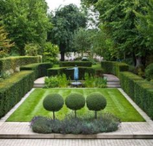
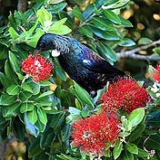
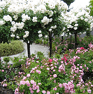
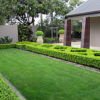
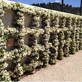
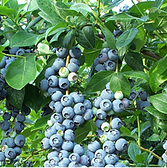
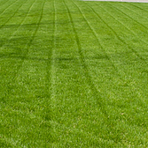
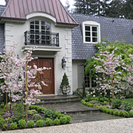
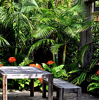

Services
Fully trained in all aspects of caring for your garden, we have a wealth of horticultural experience after years working alongside New Zealand's top landscape designers and within many award winning gardens. Whether a one-off tidyup, redevelopment, getting a property market ready, a redesign or on-going garden care, FORCE OF NATURE are 'your garden specialists'.
-
Plant selection
Plants are amazing! They can live in extreme environments and harsh conditions all over the planet. They provide us with the essential elements of life such as food and oxygen to breathe as well as some of the most beautiful sights imaginable. We will assist with suitable plant selections to enable them to flourish in their desired location and ensure your garden succeeds in reaching it's full potential.
-
Pruning and training
Many plants and trees require specific pruning techniques to keep them in optimal health, at the desired shape or height, produce flowers and bushy thick growth or produce fruit. Incorrect pruning and a lack of training can result in reduced crops, increased risks of pests and diseases and even plant failure/death. We are skilled in the various techniques required and want to see your garden succeed.
-
Attracting birds, bees, butterflies and other wildlife
FORCE OF NATURE is passionate about the environment here on theHibiscus Coast. Being surrounded by bird sanctuaries, residential gardens are the perfect place to encourage native birds and butterflies using specific trees and shrubs, which offer nectar (important for bees too), berries and shelter. We will assist in selecting, planting and caring for these important food and shelter plants and turn your property into a flourishing oasis.
-
Plant nutrition
For plants and trees to succeed in any garden they require the correct nutrients needed for root development, leaf growth, fruit and flower production and the internal processes which they carry out daily and seasonally. FORCE OF NATURE are fully trained in the nutrtional requirements of various trees and shrubs and we will manage these to enable them to reach their full potential.
-
Lawn installation and on going care
Lawn areas are an important design feature and require skill and technique to keep in constant good health for both use and aesthetics. FORCE OF NATURE will install, renovate and maintain top lawn standards, managing pests, diseases and weeds.
-
Space conscious design
Stunning designs and green training techniques can be used to accentuate or disguise walls and fence lines. Areas which capture excessive heat over summer and appear hard and life barren can be transformed into a living feature or extend existing sculptural designs used in a building's architecture.
-
Edible plants and fruiting plants
Grow your own supplies of fresh vegetables, herbs and superfoods and eat straight off the plant. Have your food grown your way, avoiding nasty chemicals used in commercial growing. Invest in plants and avoid expensive food prices while helping reduce transport carbon footprints.
-
Hedge trimming and health

When hedges have been cared for properly they not only look great, they increase privacy and value of the property. All too often hedges are left to creep out or up and get to a stage when extreme, unsightly cutback jobs or costly removal and replant is required. With correct training, pruning and fertilising hedges can be a great feature and investment in a property's desirability.
-
Lawn mowing
Ever wondered why every property doesn't have a great looking lawn?? Lawn mowing is one of the most important actions in the garden to keep it looking healthy and lush. It is important to mow lawns at correct frequencies and heights and have clean, sharp equipment to avoid introducing fungal diseases, weed seeds and shredding of the leaf blades.
-
Creating a stylish entrance
Correct plant selection to compliment a property's architecture and design is a key element in creating an entrance that leaves a lasting impression. Accentuate your property by adding small trees, shrubs, hedges or climbers to add instant grandeur, colour or seasonal interest. This can begin from the front gate, the driveway or in pots by the front door.
-
Lush 'Outdoor Rooms'
Outdoor areas can easily be transformed into 'Outdoor rooms' enhancing the indoor-outdoor flow. Perfect for entertaining on warm, clear nights or simply relaxing in your own tranquil oasis. The use of fragrant plant species is another way to enhance your garden experience.
-
Potted plants, trees and palms
Our team can ensure your potted plants are kept healthy and add aesthetic value to hard surfaced areas, or grow plant specimens until large enough to put in the garden. Potted plants are a great feature which can be relocated when areas require maximisation of space, to hide service areas such as pool sheds and equipment or rubbish bin storage areas.